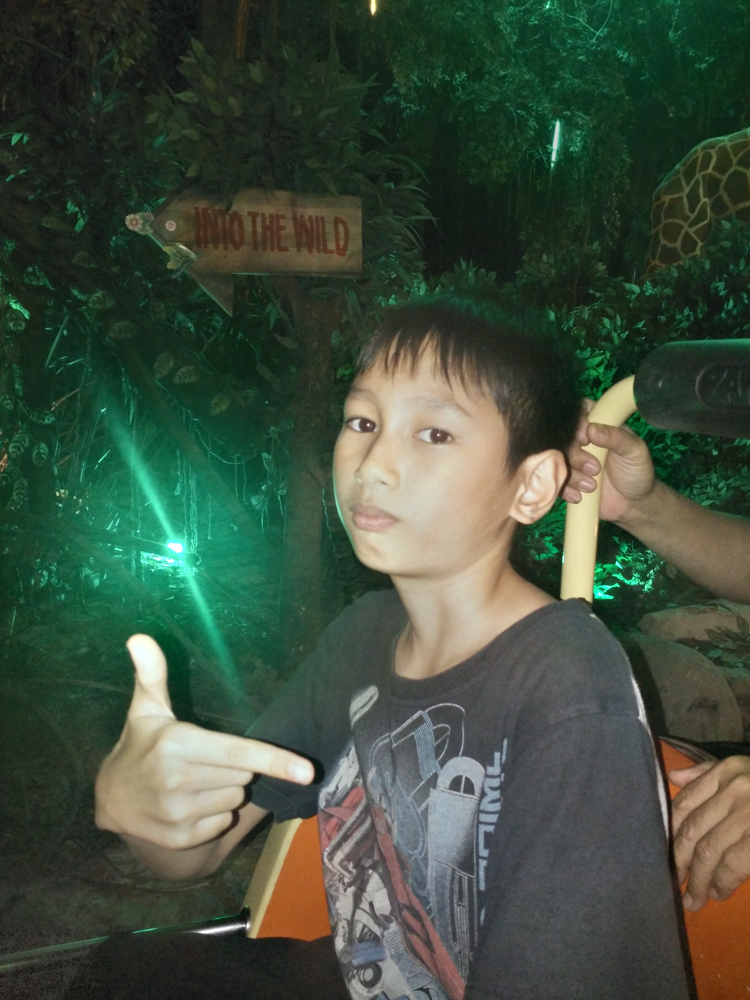
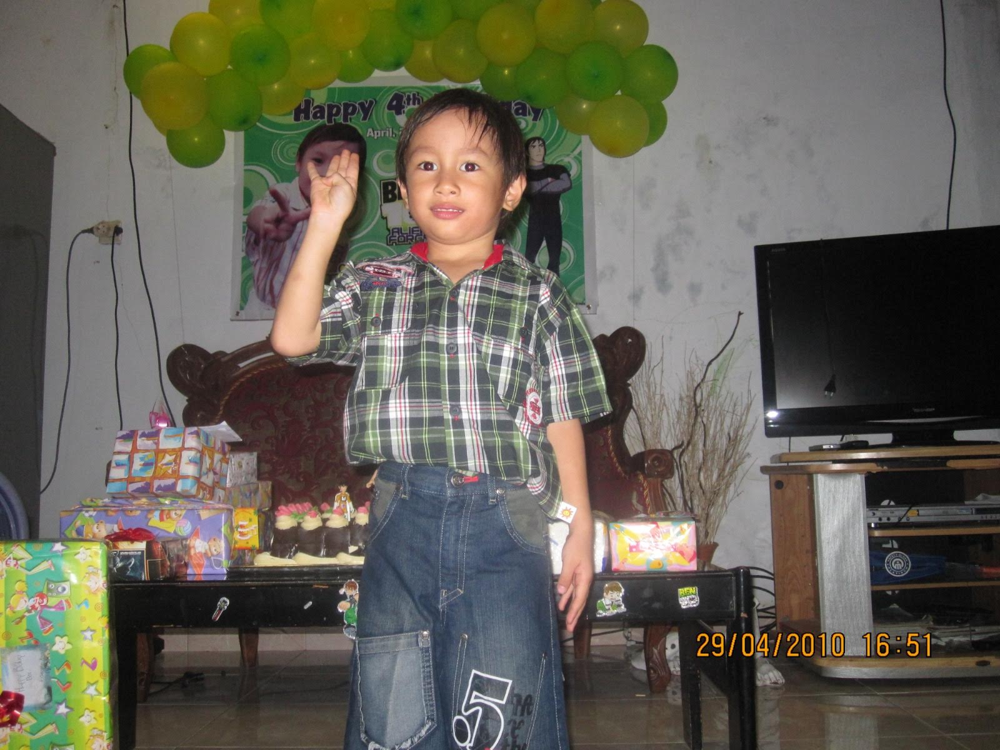

Monyet atau wanara adalah istilah untuk semua anggota primata yang bukan prosimia ("pra-kera", seperti lemur dan tarsius) atau kera, baik yang tinggal di Dunia Lama maupun Dunia Baru. Hingga saat ini dikenal 264 jenis monyet yang hidup di dunia. Tidak seperti kera, monyet biasanya berekor dan berukuran lebih kecil.
seperti apa sih monyet| Spesies langka | Spesies ketawa | Spesies jamet |

|
 |  |
| UKURAN | HARGA |
|---|---|
| kecil | Rp 5.000 |
| Besar | Rp 7.000 |